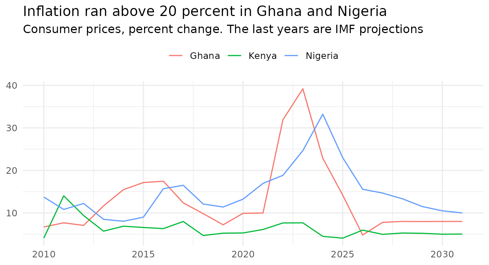

saisdata puts the course data for the SAIS MIEF R
workshop one line away: international economic data from the IMF’s World
Economic Outlook, on growth, prices, jobs, trade and the government’s
books. Everything on this page runs offline: the data are inside the
package.
The examples use the tidyverse, as the course does. The package itself needs nothing but R.
This package is not an official IMF or World Bank product.
Install and load
Run this once, in the R Console:
install.packages("saisdata", repos = "https://teal-insights.r-universe.dev")Then load it in each session, with the tidyverse. There is nothing else to read in:
library(tidyverse) # load the tidyverse: dplyr, ggplot2, tidyr and more
library(saisdata) # load the course data: weo, weo_groups, wb_groups
glimpse(weo) # every column, with its type and its first values
#> Rows: 6,720
#> Columns: 17
#> $ code <chr> "AND", "AND", "AND", "AND", "AND", "AND", "AND…
#> $ name <chr> "Andorra, Principality of", "Andorra, Principa…
#> $ year <int> 2000, 2001, 2002, 2003, 2004, 2005, 2006, 2007…
#> $ gross_debt <dbl> NA, 15.774, 15.266, 15.163, 15.105, 14.760, 17…
#> $ primary_balance <dbl> NA, 1.475, 1.676, 2.273, 2.430, 0.268, -0.994,…
#> $ overall_balance <dbl> NA, 0.658, 0.978, 1.764, 1.855, -0.081, -1.436…
#> $ gdp_usd_bn <dbl> 1.429, 1.547, 1.758, 2.362, 2.896, 3.158, 3.45…
#> $ latest_actual <int> 2025, 2025, 2025, 2025, 2025, 2025, 2025, 2025…
#> $ fiscal_year <chr> "January/December", "January/December", "Janua…
#> $ real_gdp_growth <dbl> NA, 8.119, 4.546, 8.694, 8.136, 5.398, 4.809, …
#> $ inflation <dbl> NA, NA, 3.127, 3.056, 2.907, 3.526, 3.682, 2.6…
#> $ unemployment_rate <dbl> NA, NA, NA, NA, NA, NA, NA, NA, NA, NA, 3.000,…
#> $ current_account_balance <dbl> NA, NA, NA, NA, NA, NA, NA, NA, NA, NA, NA, NA…
#> $ gdp_per_capita_usd <dbl> NA, NA, NA, NA, NA, NA, NA, NA, NA, NA, 49030.…
#> $ population_mn <dbl> NA, NA, NA, NA, NA, NA, NA, NA, NA, NA, 0.070,…
#> $ revenue <dbl> NA, 27.362, 25.977, 25.980, 25.545, 23.305, 23…
#> $ expenditure <dbl> NA, 26.704, 25.000, 24.216, 23.690, 23.387, 25…Try it small first
weo_mini is twelve rows of weo: six
countries, two years, six indicators. It fits on one screen, so you can
check a line of code by eye before you run it on the full table.
weo_mini # the whole table: twelve rows, nine columns
#> # A tibble: 12 × 9
#> code name year gross_debt primary_balance overall_balance real_gdp_growth
#> <chr> <chr> <int> <dbl> <dbl> <dbl> <dbl>
#> 1 BRA Brazil 2015 71.7 -0.853 -9.28 -3.55
#> 2 BRA Brazil 2025 93.3 -0.134 -7.43 2.29
#> 3 DEU Germa… 2015 71.0 1.99 0.913 1.77
#> 4 DEU Germa… 2025 62.7 -2.06 -2.92 0.229
#> 5 GHA Ghana 2015 53.9 0.938 -4.01 2.12
#> 6 GHA Ghana 2025 48.8 2.13 -1.35 5.95
#> 7 KEN Kenya 2015 45.8 -4.22 -6.68 4.97
#> 8 KEN Kenya 2025 71.3 -1.04 -6.49 4.63
#> 9 NGA Niger… 2015 14.9 -1.90 -2.70 2.65
#> 10 NGA Niger… 2025 36.1 0.807 -1.76 4.01
#> 11 PAK Pakis… 2015 59.1 -0.454 -4.74 3.81
#> 12 PAK Pakis… 2025 72.8 2.43 -5.37 3.18
#> # ℹ 2 more variables: inflation <dbl>, gdp_per_capita_usd <dbl>
weo_mini |> # start with the mini table, and then
filter(year == 2025) |> # keep 2025, and then
filter(inflation > real_gdp_growth) # keep inflation above growth
#> # A tibble: 5 × 9
#> code name year gross_debt primary_balance overall_balance real_gdp_growth
#> <chr> <chr> <int> <dbl> <dbl> <dbl> <dbl>
#> 1 BRA Brazil 2025 93.3 -0.134 -7.43 2.29
#> 2 DEU Germany 2025 62.7 -2.06 -2.92 0.229
#> 3 GHA Ghana 2025 48.8 2.13 -1.35 5.95
#> 4 NGA Nigeria 2025 36.1 0.807 -1.76 4.01
#> 5 PAK Pakist… 2025 72.8 2.43 -5.37 3.18
#> # ℹ 2 more variables: inflation <dbl>, gdp_per_capita_usd <dbl>Find what you can ask
weo_indicators has one row for each of the IMF’s 44
indicators, with what it measures in plain words. Start here when you
have a question and do not know whether the data can answer it.
weo_indicators |> # start with the indicators, and then
count(topic) # count the rows in each topic
#> # A tibble: 7 × 2
#> topic n
#> <chr> <int>
#> 1 Government finances 14
#> 2 Growth and size 8
#> 3 Living standards 6
#> 4 People and jobs 3
#> 5 Prices 5
#> 6 Saving and investment 2
#> 7 Trade and payments 6
weo_indicators |> # start with the indicators, and then
filter(topic == "Living standards") |> # keep one topic, and then
select(indicator, units, description) # keep the columns to read
#> # A tibble: 6 × 3
#> indicator units description
#> <chr> <chr> <chr>
#> 1 NGDPDPC US dollars GDP in US dollars divid…
#> 2 PPPPC International dollars GDP per person at purch…
#> 3 NGDPRPPPPC 2021 international dollars GDP per person at purch…
#> 4 NGDPPC National currency GDP per person at curre…
#> 5 NGDPRPC National currency GDP per person with inf…
#> 6 PPPEX National currency per international dollar The purchasing power pa…Ask about growth, prices and trade
Twelve of the indicators are columns of weo, so the
commonest questions need no reshaping. This follows inflation in three
countries.
weo |> # start with the panel, and then
filter(code %in% c("GHA", "KEN", "NGA")) |> # keep three countries, and then
filter(year >= 2010) |> # start in 2010, and then
ggplot(aes(x = year, y = inflation, color = name)) + # map columns
geom_line() + # draw a line for each country
labs( # add the words:
title = "Inflation ran above 20 percent in Ghana and Nigeria", # the finding
subtitle = "Consumer prices, percent change. The last years are IMF projections",
x = NULL, # no x axis title
y = NULL, # no y axis title
color = NULL # no legend title
) + # close labs()
theme_minimal(base_size = 12) + # a clean, light theme
theme(legend.position = "top") # legend above the chart
Go beyond the twelve columns
weo_full holds all 44 indicators, long: one row per
country, indicator and year. Filter to the indicators you want, then
send them up into columns. This puts saving beside investment for
Indonesia.
weo_full |> # start with the long table, then
filter(code == "IDN", year >= 2020) |> # keep Indonesia since 2020
filter(year <= 2025) |> # stop at 2025, and then
filter(indicator %in% c("NGSD_NGDP", "NID_NGDP")) |> # keep two indicators
select(year, indicator, value) |> # keep what the pivot needs
pivot_wider( # send the indicators up:
names_from = indicator, # one column per indicator
values_from = value # filled from value
) # close pivot_wider()
#> # A tibble: 6 × 3
#> year NGSD_NGDP NID_NGDP
#> <int> <dbl> <dbl>
#> 1 2020 31.9 32.3
#> 2 2021 31.7 31.4
#> 3 2022 30.7 29.7
#> 4 2023 30.2 30.3
#> 5 2024 30.8 31.4
#> 6 2025 30.5 30.6Start with one country
weo has one row per country, or IMF group of countries,
and year. Net interest is not a column: it is the primary balance minus
the overall balance.
weo |> # start with the panel, and then
filter(code == "KEN", year >= 2020) |> # keep Kenya from 2020 on, and then
filter(year <= 2025) |> # stop at 2025, and then
mutate( # add a column:
net_interest = primary_balance - overall_balance # net interest
) |> # and then
select(year, gross_debt, net_interest) # keep the columns to read
#> # A tibble: 6 × 3
#> year gross_debt net_interest
#> <int> <dbl> <dbl>
#> 1 2020 68.0 3.93
#> 2 2021 68.2 4.09
#> 3 2022 67.8 4.37
#> 4 2023 73.4 4.79
#> 5 2024 67.3 5.25
#> 6 2025 71.3 5.45Kenya’s interest bill took about 5.4 percent of GDP in 2025, on gross debt of about 71 percent of GDP.
Summarize by group
Countries have three-letter codes, and the IMF’s groups do not. This gives the typical country’s debt in each year since 2020.
weo |> # start with the panel, and then
filter(str_length(code) == 3) |> # keep countries, not IMF groups
filter(year >= 2020, year <= 2025) |> # keep 2020 to 2025, and then
group_by(year) |> # make one group per year, and then
summarize( # collapse each group to one row:
median_debt = median(gross_debt, na.rm = TRUE) # the middle value
) # close summarize()
#> # A tibble: 6 × 2
#> year median_debt
#> <int> <dbl>
#> 1 2020 56.8
#> 2 2021 56.2
#> 3 2022 54.4
#> 4 2023 54.4
#> 5 2024 54.1
#> 6 2025 52.9Join the World Bank’s groups
wb_groups joins to weo by
code. This gives the typical country’s gross debt in 2025
at each income level:
weo |> # start with the IMF's panel, and then
filter(year == 2025) |> # keep 2025, and then
inner_join(wb_groups, by = "code") |> # keep rows found in both, by code
group_by(income_level) |> # one group per income level, and then
summarize( # collapse each group to one row:
countries = n(), # how many countries went in
median_debt = median(gross_debt, na.rm = TRUE) # their middle debt
) # close summarize()
#> # A tibble: 4 × 3
#> income_level countries median_debt
#> <chr> <int> <dbl>
#> 1 High income 67 55.7
#> 2 Low income 24 52.3
#> 3 Lower middle income 47 49.6
#> 4 Upper middle income 58 54.1Tidy the IMF’s own layout
weo_groups keeps the IMF’s layout, with the years
across. Two moves make it tidy, and a few more give the world’s interest
bill in dollars.
bill <- weo_groups |> # start with the table, then
select(group_code, indicator, `2001`:`2031`) |> # keep codes and years, then
pivot_longer( # bring the years down:
cols = `2001`:`2031`, # every year column
names_to = "year", # their names go in year
names_transform = as.integer, # as whole numbers
values_to = "value" # their numbers go in value
) |> # and then
pivot_wider( # send the indicators up:
names_from = indicator, # one column per indicator
values_from = value # filled from value
) |> # and then
mutate( # add a column:
# primary balance minus overall balance, times GDP, in USD billions
net_interest_usd_bn = (GGXONLB_NGDP - GGXCNL_NGDP) / 100 * NGDPD
) |> # and then
group_by(year) |> # one group per year, then
summarize( # add up the two groups:
net_interest_usd_bn = sum(net_interest_usd_bn) # the world's bill
) # close summarize()
bill |> # start with the bill, and then
filter(year %in% c(2001, 2025)) # keep the two years to compare
#> # A tibble: 2 × 2
#> year net_interest_usd_bn
#> <int> <dbl>
#> 1 2001 849.
#> 2 2025 2371.The two groups’ balances are averages weighted by GDP, so this total is an approximation.
Chart it, and print the credit
Every chart made from these data carries a source line. From 2026 on the values are IMF projections, so the chart shades them. This chart uses no World Bank groups, so its source line drops that sentence.
bill |> # start with the bill, and then
mutate( # add a column:
kind = if_else(year <= 2025, "Estimate", "IMF projection") # which is which
) |> # and then
ggplot(aes(x = year, y = net_interest_usd_bn, fill = kind)) + # map columns
geom_col() + # draw one bar a year
scale_fill_manual( # choose the two colors:
values = c("Estimate" = "#143E5A", "IMF projection" = "#9CC9D8") # navy, pale
) + # close scale_fill_manual()
labs( # add the words:
title = "The world's net interest bill is nearly three times its 2001 level",
subtitle = "Net interest of governments, billions of US dollars",
x = NULL, # no x axis title
y = NULL, # no y axis title
fill = NULL, # no legend title
caption = str_c( # the source line:
"Source: International Monetary Fund, World Economic Outlook Database, ",
"October 2026,\nhttps://data.imf.org/en/datasets/IMF.RES:WEO. ",
"Net interest is the primary balance\nminus the overall balance, ",
"calculated for this workshop."
) # close str_c()
) + # close labs()
theme_minimal(base_size = 12) + # a clean, light theme
theme( # adjust a few details:
legend.position = "top", # legend above the chart
panel.grid.minor = element_blank(), # drop the minor lines
panel.grid.major.x = element_blank(), # drop the vertical lines
plot.caption = element_text(hjust = 0, size = 8, color = "grey35"),
plot.title.position = "plot", # title at the left edge
plot.caption.position = "plot" # caption at the left edge
) # close theme()
Read the files for Day 2
Version 0.2.0 carries nine files for the lesson on importing data.
sais_example() lists them, and
copy_course_files() copies them into a folder of your
project. In the course that folder is
here::here("data").
library(readxl) # load readxl, which reads Excel files
folder <- file.path(tempdir(), "data") # a stand-in for your project's data folder
copy_course_files(folder) # copy the nine files there
groups <- read_excel( # read an Excel file:
file.path(folder, "wb-country-classification.xlsx"), # the spreadsheet
skip = 3 # its header is on row 4
) # close read_excel()
groups # print it
#> # A tibble: 217 × 5
#> Economy Code Region `Income group` `Lending category`
#> <chr> <chr> <chr> <chr> <chr>
#> 1 Aruba ABW Latin America &… High income Not classified
#> 2 Afghanistan AFG Middle East, No… Low income IDA
#> 3 Angola AGO Sub-Saharan Afr… Lower middle … IBRD
#> 4 Albania ALB Europe & Centra… Upper middle … IBRD
#> 5 Andorra AND Europe & Centra… High income Not classified
#> 6 United Arab Emirates ARE Middle East, No… High income Not classified
#> 7 Argentina ARG Latin America &… Upper middle … IBRD
#> 8 Armenia ARM Europe & Centra… Upper middle … IBRD
#> 9 American Samoa ASM East Asia & Pac… High income Not classified
#> 10 Antigua and Barbuda ATG Latin America &… High income IBRD
#> # ℹ 207 more rows
life <- read_csv( # read a CSV file:
file.path(folder, "wdi_life_expectancy.csv"), # a saved World Bank series
show_col_types = FALSE # without the column report
) # close read_csv()
weo |> # start with the panel, then
filter(str_length(code) == 3, year == 2023) |> # countries in 2023, and then
left_join(life, by = c("code", "year")) |> # add life expectancy
select(name, gross_debt, life_expectancy_years) # keep columns to read
#> # A tibble: 197 × 3
#> name gross_debt life_expectancy_years
#> <chr> <dbl> <dbl>
#> 1 Andorra, Principality of 35.4 84.0
#> 2 Australia 49.4 83.1
#> 3 Austria 77.8 81.8
#> 4 Belgium 103. 82.4
#> 5 Canada 105. 81.6
#> 6 Croatia, Republic of 60.9 78.5
#> 7 Cyprus 71.1 81.6
#> 8 Czech Republic 42.2 79.8
#> 9 Denmark 33.0 81.8
#> 10 Estonia, Republic of 20.3 78.8
#> # ℹ 187 more rowsWhere to read more
-
?weo,?weo_mini,?weo_full,?weo_indicators,?weo_groupsand?wb_groupssay what one row is, the units, the source, the vintage and what was changed. -
citation("saisdata")prints how to cite the package and the data. -
system.file("LICENSE-data.md", package = "saisdata")is the path to the data terms. The MIT license covers the package’s code and documentation, not the data.